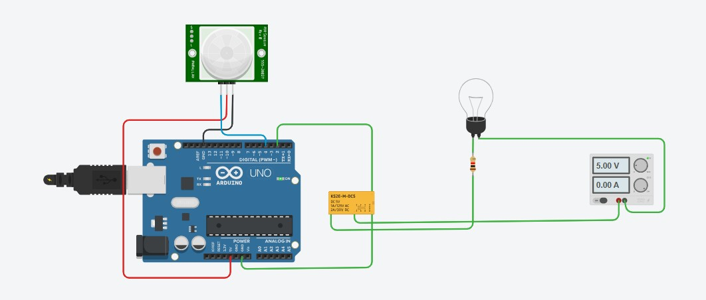

人來燈亮、持續刷新、離開精確延遲 5 秒熄滅與防閃爍回跳演算法
在自動節能走廊燈、玄關感應燈與智慧建築照明設計中，「**人來燈亮、人走後延遲 5 秒自動熄滅**」是最標準且實用的數位控制場景。本專案依據使用者的實驗接線，使用 **Arduino Uno R3** 微控制器，將 **PIR 紅外線人體動態感測器** 連接至 **Pin 4** 作為輸入觸發端，將 **小型電磁繼電器（KS2E-M-DC5）** 連接至 **Pin 2** 作為負載開關輸出端，安全控制獨立電源回路中的負載燈泡。

| 模組 / 元件 | 端子引腳 (Pin) | 連接 Arduino 端點 | 電氣角色與功能 |
|---|---|---|---|
| PIR 人體紅外線感測器 | VCC (紅線) | Arduino 5V | 模組主電源供電 |
| GND (黑線) | Arduino GND | 共地參考基準 | |
| OUT / Signal (藍線) | Digital Pin 4 | 數位輸入：有人時輸出 HIGH，無人時輸出 LOW | |
| 繼電器線圈控制側 | Coil (+) (綠線) | Digital Pin 2 | 數位輸出：HIGH 激磁吸合開燈，LOW 斷開熄滅 |
| Coil (-) (綠線) | Arduino GND | 線圈接地回路 | |
| 受控負載燈泡側 | COM (共同端) | 燈泡限流電阻後端 | 負載回路樞紐開關 |
| NO (常開端) | 外接直流 5.00V 電源負極 (-) | 平時斷開，繼電器吸合時閉合通電點亮燈泡 |
millis() 非阻塞式架構？delay(5000)，Arduino 在整整 5 秒內會被完全卡死無法執行任何運算。若人在第 2 秒折返，由於單晶片被卡住而無法讀取 Pin 4，電燈依然會在第 5 秒強制熄滅！millis() 時間戳記 比對，CPU 主迴圈以每秒數萬次高速運行，既能精準執行 5 秒倒數，又能隨時在微秒級捕捉到人員重新進入的訊號，實現「持續刷新」與「防閃爍回跳」。
lastMotionTime = millis()，維持常亮。/**
* @file arduino_pir_relay_delay5s.ino
* @brief Arduino PIR 人體感測器 (Pin 4) 控制繼電器 (Pin 2) 延遲 5 秒關燈程式
* @note 採用非阻塞 millis() 狀態機架構，具備活動持續刷新與中途回跳防閃爍機制
*/
// 引腳定義 (嚴格對應使用者電路接線)
const int PIR_PIN = 4; // 紅外線感測器信號輸出 (OUT)
const int RELAY_PIN = 2; // 繼電器控制輸入 (IN / Coil)
// 時間常數定義
const unsigned long OFF_DELAY_TIME = 5000; // 人離開後的關燈延遲時間 (5000毫秒 = 5秒)
// 系統狀態變數
unsigned long lastMotionTime = 0; // 記錄最後一次偵測到動態的時間戳 (毫秒)
bool lightState = false; // 記錄當前電燈狀態 (true: 開燈 / false: 關燈)
int lastPirReading = LOW; // 記錄前一次 PIR 讀數，用於事件邊緣觸發提示
void setup() {
// 啟用序列埠監控 (鮑率 9600 bps)，便於除錯與即時觀測
Serial.begin(9600);
Serial.println(F("=================================================="));
Serial.println(F("💡 Arduino PIR (Pin 4) + 繼電器 (Pin 2) 延遲照明系統啟動"));
Serial.println(F("=================================================="));
// 設定引腳模式
pinMode(PIR_PIN, INPUT);
pinMode(RELAY_PIN, OUTPUT);
// 初始狀態：預設關閉繼電器，確保開機安全
digitalWrite(RELAY_PIN, LOW);
lightState = false;
Serial.println(F("[系統狀態] 感測器暖機就緒，電燈初始為關閉 (Pin 2 = LOW)"));
}
void loop() {
unsigned long currentMillis = millis(); // 取得目前系統開機毫秒數
int pirValue = digitalRead(PIR_PIN); // 讀取 Pin 4 紅外線感測信號 (HIGH / LOW)
// --- 1. 感測器狀態變化事件監控輸出 ---
if (pirValue != lastPirReading) {
if (pirValue == HIGH) {
Serial.println(F("\n[事件觸發] 🚨 偵測到人體移動！(Pin 4 = HIGH)"));
} else {
Serial.println(F("\n[事件觸發] 🍃 人已離開感應範圍 (Pin 4 = LOW)，啟動 5 秒倒數關燈計時..."));
}
lastPirReading = pirValue;
}
// --- 2. 核心邏輯處理 ---
if (pirValue == HIGH) {
// 【情況 A：有人在感應範圍內】
lastMotionTime = currentMillis; // 持續刷新活動時間基準
if (!lightState) {
// 原本是關燈狀態 ──► 立即開燈
digitalWrite(RELAY_PIN, HIGH);
lightState = true;
Serial.println(F("[動作執行] ⚡ 繼電器吸合 (Pin 2 = HIGH) ──► 💡 電燈已點亮"));
}
} else {
// 【情況 B：無人 (Pin 4 = LOW)】
if (lightState) {
// 目前電燈仍開著，判斷是否超過 5 秒
unsigned long elapsedTime = currentMillis - lastMotionTime;
if (elapsedTime >= OFF_DELAY_TIME) {
// 已超過 5 秒 ──► 正式關閉電燈
digitalWrite(RELAY_PIN, LOW);
lightState = false;
Serial.println(F("[動作執行] ⏰ 延遲 5 秒已滿！繼電器釋放 (Pin 2 = LOW) ──► 🌑 電燈已熄滅"));
} else {
// 還在 5 秒倒數計時中，每秒印出一次剩餘秒數
static unsigned long lastLogTime = 0;
if (currentMillis - lastLogTime >= 1000) {
lastLogTime = currentMillis;
unsigned long remainingSeconds = (OFF_DELAY_TIME - elapsedTime + 999) / 1000;
Serial.print(F("[倒數計時] 關燈倒數中... 剩餘: "));
Serial.print(remainingSeconds);
Serial.println(F(" 秒"));
}
}
}
}
delay(20); // 微幅延遲 20ms，防止 CPU 緊密空轉並具備軟體消抖作用
}/**
* @file arduino_pir_relay_simple.ino
* @brief 簡易版 PIR 控制繼電器程式 (含 5 秒延遲)
*/
void setup() {
pinMode(4, INPUT); // Pin 4 連接 PIR 感測器
pinMode(2, OUTPUT); // Pin 2 連接 繼電器
digitalWrite(2, LOW);
}
void loop() {
if (digitalRead(4) == HIGH) {
digitalWrite(2, HIGH); // 偵測到人體，開燈
} else {
delay(5000); // 無人時等待 5 秒
digitalWrite(2, LOW); // 5 秒後關燈
}
}模型/Agent: Gemini 3.8 Flash / Antigravity
Prompt 原文:
C:\Users\User\Desktop\pir0924.jpg 寫一個arudino的程式， 人體紅外線感應器 pin 4, 繼電器 pin2, 人體紅外線感應器偵測到移動，繼電器開啟電燈，離開後延遲5秒變更摘要: 依據使用者提供的電路接線截圖（PIR 接 Pin 4，繼電器接 Pin 2），建立專題筆記 `arduino_pir_relay_delay.md` 與 `arduino_pir_relay_delay.html`，設計工業級非阻塞式 `millis()` 控制程式，具備 5 秒精確離去倒數、持續刷新與防閃爍回跳機制，繪製 Mermaid 邏輯流程圖、接線對照清單與線上互動模擬器。
模型/Agent: Gemini 3.8 Flash / Antigravity
Prompt 原文:
流程圖的走線盡量不要交叉變更摘要: 重構 Mermaid 流程圖結構，採用平行左右雙分支（左側偵測移動開燈/維持、右側離開計時/關閉）向下推進，並匯流至底部單一循環收斂節點（delay 20ms）後以單一外環回繞主迴圈，徹底消除流程圖中的線條交錯糾纏，實現平面化無交叉走線。